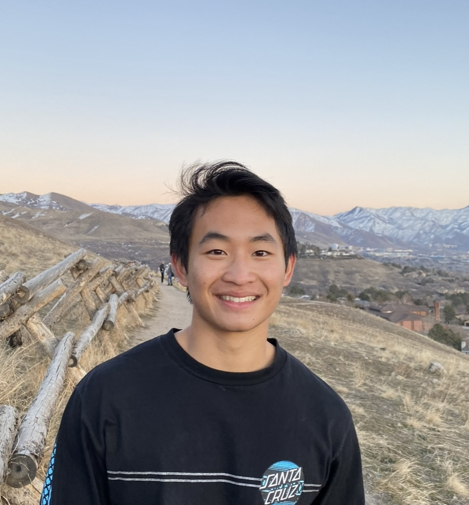

About Me
- I’m originally from Aliso Viejo, California, and I’m currently a sophomore studying Finance at Brigham Young University. I’m drawn to both the social and technical sides of finance, which is why I’m pursuing a career in private banking and wealth management. Outside of school, I enjoy rock climbing, weightlifting, going to the beach, and folding origami.

Education
Brigham Young University — Provo, UT
Bachelors of Science in Finance, Aug 2021 – Apr 2027- Overall/BYU GPA: 3.98 / 4.00
- ACT: 33/36, 98th Percentile
- BYU, 2-year Full Tuition, Merit-based Scholarship
- Member of the BYU Finance Society and Private Banking/Wealth Management Association

Experience
Ossola Wealth Management — Aliso Viejo, CA
Incoming Analyst Intern, May 2025 – Aug 2025- Develop an Excel-based system to calculate Holding Period Return (HPR) for the firm’s investment model holdings
- Utilize the system to track monthly portfolio changes across discretionary accounts, evaluating 1, 3, and 5-year performance against equity benchmarks to support portfolio decision-making
- Participate in monthly investment committee meetings, present performance analyses and benchmarking data
Cable One — Provo, UT
Data Analyst Intern, Jan 2025 – Apr 2025- Utilize Tableau to analyze operational data and identify key trends contributing to frequent repeat customer calls
- Assist in developing strategies to reduce repeat calls through workflow optimization and team collaboration
- Manage project timelines, track key deliverables, and coordinate with sponsors to ensure clear communication
Missionary Training Center — Provo, UT
Thai Interpreter, Nov 2024 – Present- Translated church materials, including devotionals and instructional guides, from English to Thai and vice versa
- Provided real-time live interpretation during church meetings, conferences, and devotionals for diverse audiences
Awards and Skills
- Bain 2025 Case Competition: Analyzed Rivian’s market position and recommended priorities to increase profitability
- Thai: Advanced speaking and intermediate writing skills, with over 2 years of experience in various contexts
- Skills: Proficient in Excel VBA for automation and data analysis, and in Tableau for data visualization and reporting
- Eagle Scout, Boy Scouts of America: Led and organized a landscaping project to beautify a nearby neighborhood